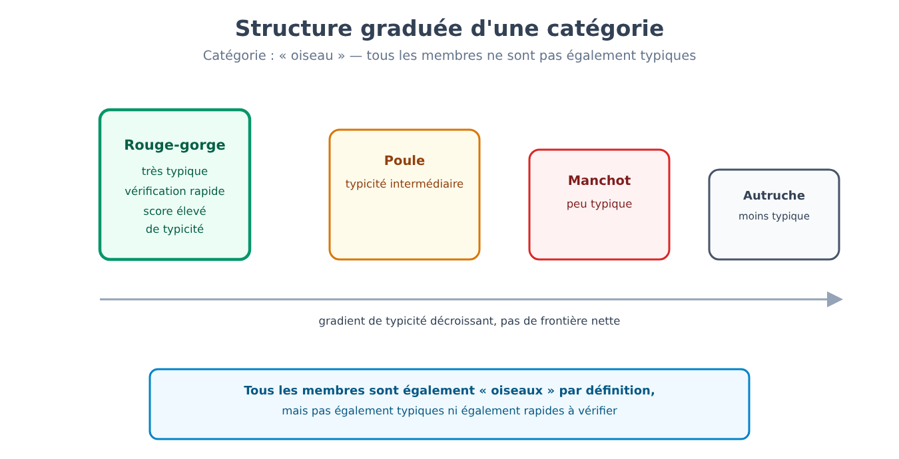
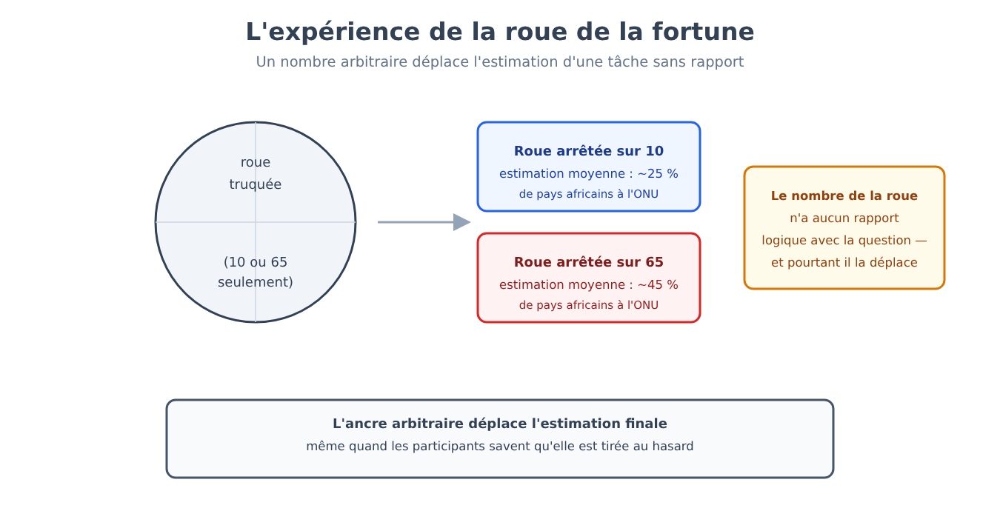
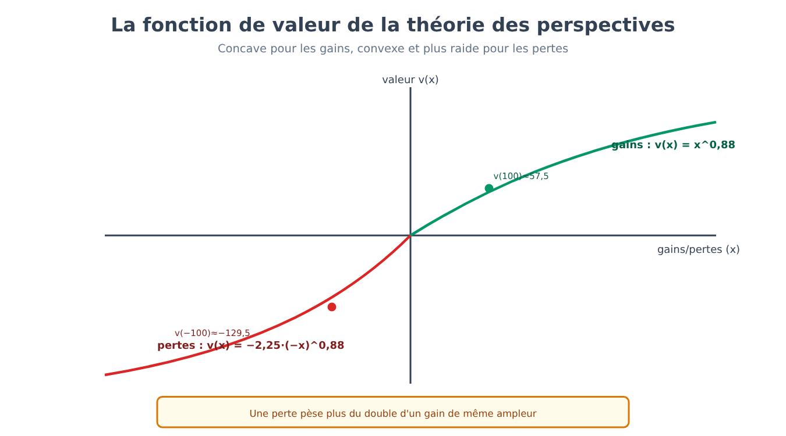
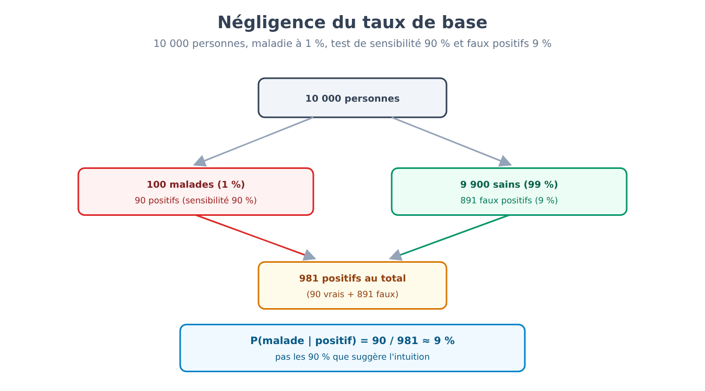
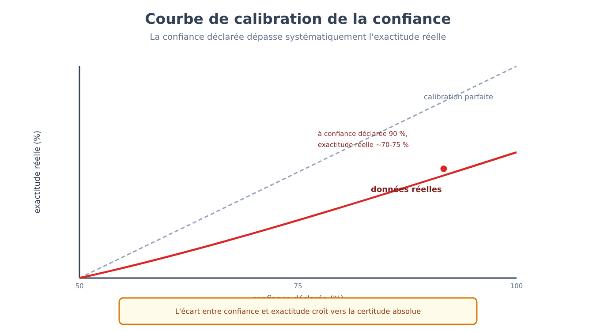
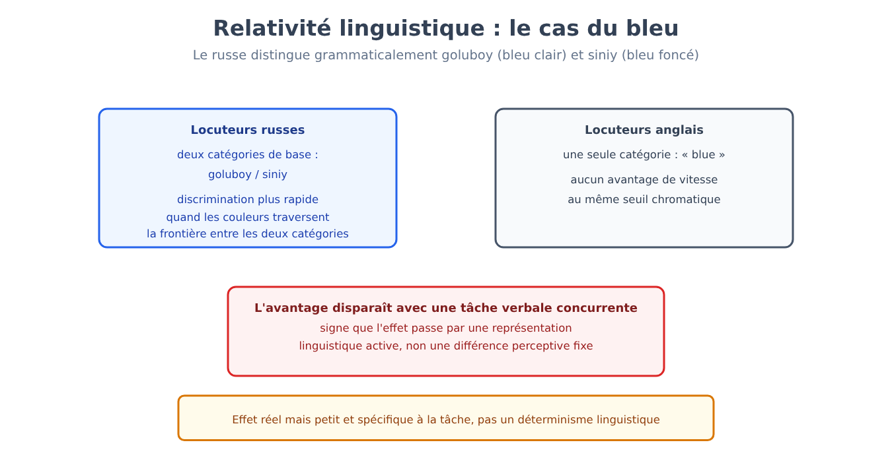

Partie VII. Cognition, raisonnement, erreurs systématiques
Chapitre 41 — Concepts et catégories
[EN DEUX MOTS]
Reconnaître qu'un animal rayé de noir et de blanc est un zèbre suppose de posséder un concept de zèbre — mais qu'est-ce qu'un concept, exactement ? Ce chapitre expose pourquoi la tentative de réponse la plus intuitive (un concept comme une liste de conditions nécessaires et suffisantes) ne résiste pas aux données, et quels modèles l'ont remplacée.
Un problème que le behaviorisme ne pouvait même pas poser
Le chapitre 19 a montré comment, vers la fin des années 1950, les limites du behaviorisme (son incapacité à rendre compte de phénomènes comme l'acquisition du langage ou l'apprentissage par observation sans faire référence à des représentations internes) ouvrirent la voie à la révolution cognitive (cognitive revolution) : la disposition à traiter l'esprit comme un système de traitement de l'information, dont les états internes sont légitimement objets d'étude scientifique, et pas seulement les comportements observables. La question « qu'est-ce qu'un concept, et comment est-il représenté dans l'esprit » est précisément le type de question que le behaviorisme, par construction théorique, s'interdisait de poser : un concept est un état interne, non un comportement.
Pendant des siècles, la réponse philosophique dominante à la question « qu'est-ce qu'un concept » a été la conception classique : un concept est défini par un ensemble de conditions nécessaires et suffisantes d'appartenance à la catégorie. « Célibataire » signifie « homme adulte non marié » : chaque condition est nécessaire, et leur conjonction est suffisante. Le problème est que, pour l'immense majorité des concepts naturels employés quotidiennement — « jeu », « oiseau », « meuble », « fruit » — personne n'est jamais parvenu à spécifier un ensemble de conditions qui inclue tous les cas acceptés comme membres et exclue tous les non-membres, sans exception.
Les membres d'une catégorie ne sont pas tous égaux
Le premier indice expérimental contre la conception classique fut la découverte que les membres d'une catégorie ne sont pas traités comme équivalents : certains sont jugés de meilleurs exemples, plus « typiques », que d'autres.
[LE PLAN DE L'EXPÉRIENCE]
On demande aux participants de juger, sur une échelle numérique, dans quelle mesure un élément représente bien une catégorie donnée (par exemple, dans quelle mesure « rouge-gorge » représente bien la catégorie « oiseau », par rapport à « manchot » ou « autruche »). Les jugements de typicité se révèlent remarquablement concordants entre participants différents, et non aléatoires : le rouge-gorge reçoit des scores de typicité systématiquement plus élevés que le manchot. Dans une seconde tâche, on mesure le temps de réaction nécessaire pour vérifier des affirmations comme « un rouge-gorge est un oiseau » contre « un manchot est un oiseau » : les vérifications portant sur des membres typiques sont systématiquement plus rapides que celles portant sur des membres atypiques, bien que les deux affirmations soient également vraies. Si l'appartenance à une catégorie était une question de tout ou rien fondée sur des conditions fixes, il n'y aurait aucune raison à une telle différence de temps ou de jugement.
Ce résultat — attribué principalement aux études sur la typicité d'Eleanor Rosch (expériences de jugement de typicité et de temps de vérification, années 1970) — la structure graduée (graded structure) des catégories — conduisit à la théorie du prototype (prototype theory) : un concept est représenté non par une liste de conditions, mais par un prototype, une représentation des caractéristiques centrales et les plus typiques de la catégorie (souvent une sorte de moyenne statistique des membres rencontrés), et l'appartenance d'un nouvel élément est jugée d'après sa ressemblance avec ce prototype, et non par la vérification de conditions fixes. Un modèle alternatif, la théorie des exemplaires (exemplar theory), propose qu'il n'existe aucun prototype abstrait : la catégorisation se ferait en comparant le nouvel élément à la mémoire d'exemplaires spécifiques déjà rencontrés, et non à une moyenne récapitulative. Les deux modèles font des prévisions différentes dans certaines conditions expérimentales (par exemple sur la sensibilité à la variabilité interne de la catégorie), et la recherche actuelle suggère que les deux mécanismes peuvent contribuer, dans des proportions variables selon la tâche et l'expérience de la personne avec cette catégorie particulière.

Les hiérarchies ont un niveau privilégié
Les catégories n'existent pas isolément, mais organisées en hiérarchies d'inclusion : un berger allemand est un chien, qui est un mammifère, qui est un animal. Parmi les niveaux possibles, l'un reçoit un traitement cognitif privilégié : le niveau de base (basic level) — « chien », et non « mammifère » (niveau supraordonné, trop général) ni « berger allemand » (niveau subordonné, trop spécifique). Le niveau de base est celui auquel les gens nomment spontanément un objet, celui pour lequel il existe le plus de caractéristiques partagées distinctives par rapport aux catégories voisines du même niveau, et celui pour lequel il est possible de former une image mentale unique et reconnaissable (il est facile d'imaginer « un chien », difficile d'imaginer « un mammifère » en général, relativement facile mais déjà plus spécifique d'imaginer « un berger allemand »).
[L'ESSENTIEL DU CHAPITRE]
• La conception classique des concepts (conditions nécessaires et suffisantes) ne résiste pas aux données pour la plupart des concepts naturels, qui n'admettent pas de définition sans exception.
• Les jugements de typicité et les temps de vérification montrent que les catégories ont une structure graduée : certains membres sont jugés de meilleurs exemples que d'autres.
• La théorie du prototype (comparaison avec une représentation centrale abstraite) et la théorie des exemplaires (comparaison avec des cas spécifiques en mémoire) sont les deux principaux modèles proposés pour expliquer cette structure graduée, probablement tous deux en partie corrects.
• Les hiérarchies de catégories ont un niveau de base cognitivement privilégié, ni trop général ni trop spécifique.
Chapitre 42 — Deux modes de pensée
[EN DEUX MOTS]
Une idée devenue extrêmement populaire, y compris hors de la psychologie, distingue deux modes de traitement mental : l'un rapide et automatique, l'autre lent et contrôlé. Ce chapitre expose ce que ce modèle décrit bien, et pourquoi son statut de théorie psychologique formelle — et pas seulement de métaphore descriptive utile — reste l'objet d'un débat interne à la discipline, souvent invisible pour qui le rencontre dans sa version de vulgarisation.
Une étiquette pour deux profils de traitement très différents
Le modèle, dans sa formulation la plus répandue (Keith Stanovich et Richard West, qui ont introduit l'étiquette « Système 1/Système 2 » en 2000), distingue le Système 1, un traitement rapide, automatique, qui demande peu ou pas d'effort cognitif délibéré, souvent inaccessible à l'introspection dans ses mécanismes (lire un mot écrit dans sa propre langue, reconnaître un visage familier, éprouver une émotion immédiate devant une image), et le Système 2, un traitement lent, délibéré, qui demande de l'attention et des ressources limitées, et qui peut être interrompu si les ressources sont mobilisées ailleurs (résoudre une équation, évaluer un argument complexe, choisir entre deux options comportant de nombreuses variables). Le modèle se rattache directement à la distinction entre traitement automatique et traitement contrôlé déjà rencontrée aux chapitres 30 et 31 à propos de l'attention et de l'automatisme : le Système 1 fonctionne avec une charge attentionnelle minimale, le Système 2 requiert les mêmes ressources attentionnelles limitées décrites dans ce chapitre, et il est donc vulnérable au risque d'être submergé lorsque ces ressources sont mobilisées ailleurs.
Le modèle possède un notable pouvoir descriptif et explicatif pour organiser des phénomènes autrement dispersés : beaucoup des heuristiques traitées au chapitre 43, par exemple, sont décrites comme des produits typiques du Système 1 — des réponses rapides, souvent correctes, mais systématiquement biaisées dans des situations construites exprès pour en isoler les limites.
Un modèle utile n'est pas automatiquement une théorie correcte
[QUESTION CONTROVERSÉE]
Au sein de la psychologie cognitive, un groupe substantiel de chercheurs a soulevé de sérieuses objections au statut théorique du modèle à deux systèmes, en distinguant son utilité comme métaphore descriptive (regrouper sous deux étiquettes commodes des phénomènes aux propriétés similaires) de sa validité comme théorie explicative dotée d'un mécanisme cérébral spécifique et unifié. Les principales objections comprennent : l'absence de frontière nette et mesurable entre les deux systèmes (de nombreuses tâches présentent des gradations intermédiaires d'automaticité, non une dichotomie propre) ; le fait que « Système 1 » et « Système 2 » regroupent, sous la même étiquette, des processus aux bases neurales et aux propriétés computationnelles très différentes entre eux (l'automaticité de la reconnaissance d'un visage et celle d'un réflexe conditionné ont peu en commun du point de vue des mécanismes impliqués) ; et le risque que l'étiquette elle-même devienne une explication apparente (« il s'est trompé parce qu'il a utilisé le Système 1 ») qui masque l'absence de mécanisme causal spécifié. Les partisans du modèle répondent qu'aucune théorie psychologique de ce niveau de généralité n'évite les gradations internes, et que sa capacité à générer des prévisions vérifiées empiriquement (par exemple, prévoir quelles conditions expérimentales augmentent ou réduisent une erreur systématique) est de toute façon un signe de validité scientifique, indépendamment du fait que les « deux systèmes » correspondent ou non à deux structures neurales nettement séparées. Le débat reste ouvert : le modèle est largement utilisé comme outil didactique et heuristique de recherche, avec une prudence croissante, dans les milieux académiques, à l'égard de le traiter comme la découverte de deux mécanismes cérébraux distincts et localisables.
Cette distinction entre utilité descriptive et validité de mécanisme se rattache directement à la comparaison entre traitement attentif et traitement automatique du chapitre 31 : certains des mêmes résultats expérimentaux peuvent être décrits de façon équivalente dans le langage de l'attention sélective ou dans celui des deux systèmes, signe que les deux cadres conceptuels se recoupent davantage que leur origine indépendante ne le laisserait penser.
[L'ESSENTIEL DU CHAPITRE]
• Le modèle à deux systèmes distingue un traitement rapide et automatique (Système 1) d'un traitement lent et contrôlé (Système 2), en se rattachant directement à la distinction entre traitement automatique et attention contrôlée du chapitre 31.
• Le modèle a un fort pouvoir descriptif pour organiser des phénomènes comme les heuristiques du chapitre 43, mais son statut de théorie de mécanisme (et non seulement de métaphore utile) fait l'objet d'un débat interne à la discipline.
• Les principales objections portent sur l'absence de frontière nette entre les deux systèmes et sur le risque que l'étiquette serve d'explication apparente sans spécifier de mécanisme causal.
Chapitre 43 — Heuristiques
[EN DEUX MOTS]
Face à un jugement incertain, l'esprit ne calcule presque jamais une probabilité formelle : il s'en remet à des raccourcis rapides, appelés heuristiques, qui fonctionnent bien dans la plupart des situations quotidiennes mais peuvent produire des erreurs systématiques et prévisibles dans des conditions construites exprès pour les isoler. Ce chapitre expose trois des heuristiques les mieux documentées, les plans expérimentaux originaux qui les ont isolées, et le contrepoint de ceux qui les considèrent non comme des erreurs mais comme des adaptations rationnelles à leur environnement.
La disponibilité : juger la fréquence d'après la facilité du rappel
L'heuristique de disponibilité (availability heuristic) consiste à estimer la fréquence ou la probabilité d'un événement d'après la facilité avec laquelle des exemples de cet événement viennent à l'esprit — un raccourci raisonnable, car dans beaucoup de situations réelles les événements les plus fréquents sont aussi les plus faciles à se rappeler, mais systématiquement trompeur lorsque la facilité de rappel dépend de facteurs autres que la fréquence réelle (par exemple, le caractère récent de l'événement, sa vivacité, ou sa couverture médiatique).
[LE PLAN DE L'EXPÉRIENCE]
Dans une étude classique d'Amos Tversky et Daniel Kahneman (1973), on demande aux participants d'estimer si, dans un texte anglais quelconque, il est plus fréquent qu'un mot commence par la lettre « K » ou qu'il ait le « K » comme troisième lettre. La grande majorité répond que les mots commençant par K sont plus fréquents — alors que, en réalité, c'est le contraire qui est vrai : le K est plus courant comme troisième lettre. L'explication proposée est qu'il est beaucoup plus facile de récupérer en mémoire des mots organisés par lettre initiale (une tâche que le système de récupération sait bien accomplir) que par lettre en position intermédiaire : c'est la facilité de récupération, et non la fréquence réelle, qui guide le jugement.
La représentativité : juger la probabilité d'après la ressemblance à un stéréotype
L'heuristique de représentativité (representativeness heuristic) consiste à estimer la probabilité qu'un élément appartienne à une catégorie d'après sa ressemblance avec le stéréotype typique de cette catégorie, en ignorant des informations statistiques pertinentes comme la fréquence de base de la catégorie dans la population.
[LE PLAN DE L'EXPÉRIENCE]
Dans l'exemple classique, tiré de Tversky et Kahneman (1974) et fondé sur la ligne de recherche sur les problèmes de prédiction de 1973 (dans laquelle les professions classées par probabilité se révélaient classées comme lorsqu'on les ordonnait par ressemblance au stéréotype), on présente une brève description d'une personne (« Steve est timide, réservé, serviable mais peu intéressé par les gens ou par le monde réel ; il a une âme docile et ordonnée, un besoin d'ordre et de structure, et une passion du détail »), et l'on demande d'estimer dans quelle mesure il est probable que Steve exerce diverses professions, dont bibliothécaire et agriculteur. Le jugement typique considère « bibliothécaire » comme plus probable qu'« agriculteur », bien qu'aux États-Unis les agriculteurs constituent une catégorie professionnelle beaucoup plus nombreuse que les bibliothécaires : la description ressemble au stéréotype du bibliothécaire plus qu'à celui de l'agriculteur, et cette ressemblance domine le jugement, écrasant l'information sur la fréquence de base des deux professions — un phénomène que le chapitre 45 reprendra dans sa forme la plus formalisée, la négligence du taux de base.
L'ancrage : un nombre sans pertinence qui déplace l'estimation finale
L'heuristique d'ancrage et d'ajustement (anchoring and adjustment) consiste à produire une estimation finale en partant d'une valeur initiale (l'ancre) et en l'ajustant de façon insuffisante, même lorsque l'ancre est manifestement arbitraire et sans lien avec la quantité à estimer.
[LE PLAN DE L'EXPÉRIENCE]
Dans l'expérience originale de Tversky et Kahneman (1974), on montre aux participants une roue de la fortune truquée pour ne s'arrêter que sur deux nombres, 10 ou 65 (les participants ne le savent pas). Après avoir vu le nombre sur lequel la roue s'est arrêtée, on leur demande d'estimer le pourcentage de pays africains membres des Nations unies — une tâche sans aucun rapport logique avec le nombre de la roue. Les participants qui avaient vu la roue s'arrêter sur 65 fournissent des estimations moyennes systématiquement plus élevées que ceux qui l'avaient vue s'arrêter sur 10, bien que les deux groupes sachent parfaitement que le nombre de la roue avait été généré au hasard et ne contenait aucune information utile pour la tâche.

Erreurs systématiques ou adaptations rationnelles ?
[QUESTION CONTROVERSÉE]
Le programme de recherche qui a isolé ces heuristiques (souvent appelé « heuristiques et biais », heuristics and biases) les présente avant tout comme des sources d'erreur systématique par rapport à une norme de rationalité formelle (calcul des probabilités, théorie de la décision). Une position alternative, développée surtout à partir des années 1990, soutient qu'étiqueter ces résultats comme des « erreurs » applique un standard de rationalité abstrait et souvent sans pertinence pour l'environnement réel dans lequel le jugement doit être rendu : dans la vie quotidienne, l'information est incomplète, le temps pour décider est limité, et les heuristiques représentent des raccourcis écologiquement rationnels, calibrés sur des environnements statistiques réels dans lesquels ils produisent, dans la grande majorité des cas, un bon résultat à un coût computationnel bien inférieur à celui d'un calcul formel complet — un compromis favorable, non un défaut cognitif. Les partisans de la première position répondent que l'existence de conditions expérimentales spécifiques et reproductibles dans lesquelles l'heuristique produit une erreur systématique, prévisible à l'avance, demeure une donnée solide quelle que soit la manière de l'interpréter : que l'heuristique soit utile dans la plupart des cas quotidiens n'implique pas que son échec, lorsqu'il se produit, ne soit pas réel, systématique et parfois important (par exemple dans des décisions médicales, financières ou judiciaires). Les deux positions s'accordent sur les données expérimentales de base ; le désaccord porte sur l'interprétation normative de ce qui compte comme une « erreur ».
[L'ESSENTIEL DU CHAPITRE]
• L'heuristique de disponibilité estime la fréquence d'après la facilité du rappel, et non la fréquence réelle, comme le montre l'expérience sur les mots commençant par K.
• L'heuristique de représentativité estime la probabilité d'après la ressemblance à un stéréotype, en ignorant la fréquence de base, comme le montre l'expérience sur Steve le bibliothécaire.
• L'heuristique d'ancrage montre qu'une estimation numérique finale est systématiquement influencée par une valeur de départ arbitraire, même lorsque la personne sait qu'elle est sans pertinence.
• Le débat entre ceux qui considèrent ces heuristiques comme des erreurs systématiques par rapport à une norme de rationalité formelle et ceux qui y voient des adaptations écologiquement rationnelles à un environnement réel reste ouvert, malgré une base de données expérimentales partagée.
Chapitre 44 — Décision sous risque
[EN DEUX MOTS]
La théorie économique classique décrit une décision rationnelle comme le choix de l'option dont la valeur espérée est la plus élevée. Les personnes réelles, avec une régularité notable, ne décident pas ainsi. Ce chapitre expose le modèle qui décrit le mieux comment les gens décident effectivement dans des conditions de risque, avec ses formules et ses exemples chiffrés.
Le modèle normatif et ses violations systématiques
Le modèle classique de l'utilité espérée (expected utility) prescrit que, parmi des options risquées, une personne rationnelle choisisse celle dont la valeur espérée est la plus élevée (probabilité de chaque issue multipliée par sa valeur, sommée sur toutes les issues possibles). Les violations systématiques de ce modèle, observées de façon répétée en laboratoire, conduisirent au développement d'un modèle descriptif alternatif, la théorie des perspectives (prospect theory), qui ne prescrit pas comment on devrait décider mais décrit comment les gens décident effectivement.
Formulée par Daniel Kahneman et Amos Tversky (1979) et précisée dans la version cumulative de 1992, dont proviennent la forme en puissance et les estimations typiques utilisées ci-dessous, la théorie des perspectives a pour premier élément le fait que les résultats ne sont pas évalués en termes absolus de richesse finale, mais comme des gains ou des pertes relatifs à un point de référence (typiquement l'état actuel). Le deuxième élément est la forme de la fonction de valeur (value function), qui relie la valeur subjective d'une issue à son ampleur objective.
[FORMULE]
La fonction de valeur de la théorie des perspectives peut être approchée par une forme, pour les gains et pour les pertes séparément, comme suit :
v(x) = x^α pour x ≥ 0 (gains)
v(x) = −λ · (−x)^β pour x < 0 (pertes)
Où :
• x est l'ampleur du gain ou de la perte par rapport au point de référence.
• v(x) est la valeur subjective attribuée à ce gain ou à cette perte.
• α et β sont des exposants inférieurs à 1 (estimations typiques autour de 0,88), qui rendent la fonction concave pour les gains et convexe pour les pertes : la différence subjective entre gagner 100 et 200 euros est perçue comme plus grande que la différence entre gagner 1100 et 1200 euros, et il en va de même, symétriquement, pour les pertes.
• λ est le coefficient d'aversion à la perte (loss aversion), estimé typiquement autour de 2 (avec des valeurs comprises entre 1,5 et 2,5 selon les études) : une perte a un impact subjectif négatif d'une ampleur supérieure au plaisir subjectif d'un gain de même valeur absolue.
Exemple de calcul. Avec α = β = 0,88 et λ = 2,25, un gain de 100 euros produit une valeur subjective v(100) = 100^0,88 ≈ 57,5. Une perte de 100 euros produit une valeur subjective v(−100) = −2,25 · 100^0,88 ≈ −129,5. En valeur absolue, la perte (129,5) pèse plus du double du gain de même ampleur (57,5) : c'est exactement la raison pour laquelle la plupart des gens refusent un pari à quitte ou double à égalité (50 % de chances de gagner 100 euros, 50 % d'en perdre 100), bien que la valeur espérée en termes monétaires soit nulle — en termes de valeur subjective selon ce modèle, la valeur espérée du pari est négative : 0,5 · 57,5 + 0,5 · (−129,5) ≈ −36,0 (sous forme simplifiée, avec des probabilités non déformées ; la théorie complète utilise des poids décisionnels qui modifient légèrement le résultat, sans changer la conclusion).

[CHIFFRES]
Le coefficient d'aversion à la perte estimé dans les études de laboratoire se situe typiquement entre 1,5 et 2,5, avec une estimation centrale autour de 2 : perdre une somme d'argent produit, en moyenne, un déplaisir subjectif égal à environ le double du plaisir produit par le gain de la même somme. Cette valeur n'est pas universelle : elle varie selon le contexte (décisions financières, de santé, de temps), selon l'ampleur de l'enjeu, et d'une personne à l'autre.
Le cadrage d'un même choix change la décision
Un deuxième élément de la théorie des perspectives concerne la fonction de pondération des probabilités : les gens ne traitent pas les probabilités objectives de façon linéaire, mais tendent à surestimer les petites probabilités (par exemple dans l'attrait disproportionné des loteries, où la probabilité de gain est minime) et à sous-estimer les probabilités moyennes à élevées par rapport à la certitude.
Une conséquence pratique, différente des heuristiques du chapitre 43 mais étroitement liée à elles (44 → 43, la théorie des perspectives et les heuristiques partagent le dispositif expérimental de la comparaison entre choix formellement équivalents mais psychologiquement différents), est l'effet de cadrage (framing effect) : un même choix, formellement identique en termes d'issues possibles, produit des décisions systématiquement différentes selon la façon dont il est décrit.
[LE PLAN DE L'EXPÉRIENCE]
Dans la célèbre étude de Tversky et Kahneman (1981) sur le cadrage, on présente aux participants un problème de décision identique sur le fond mais décrit de deux façons : dans une version, un programme pour faire face à une maladie qui menace 600 personnes est décrit comme capable de « sauver 200 personnes » avec certitude, ou bien d'avoir « une chance sur trois de sauver les 600 personnes et deux chances sur trois de n'en sauver aucune » (cadrage en termes de gains). Dans l'autre version, mathématiquement identique, les mêmes options sont décrites comme « 400 personnes mourront » avec certitude, ou bien « une chance sur trois que personne ne meure et deux chances sur trois que les 600 meurent » (cadrage en termes de pertes). Lorsque les options sont cadrées comme des gains, la majorité des participants choisit l'option certaine (aversion au risque dans le domaine des gains) ; lorsque les mêmes options sont cadrées comme des pertes, la majorité choisit l'option risquée (propension au risque dans le domaine des pertes) — une inversion de préférence déterminée uniquement par la formulation verbale, et non par les nombres, qui viole un principe fondamental de la théorie de la décision rationnelle (l'invariance par rapport à la description).
[L'ESSENTIEL DU CHAPITRE]
• La théorie des perspectives décrit comment les gens décident effectivement dans des conditions de risque, par contraste avec le modèle normatif de l'utilité espérée.
• La fonction de valeur est concave pour les gains et convexe pour les pertes, avec un coefficient d'aversion à la perte typiquement autour de 2 : les pertes pèsent plus que les gains de même ampleur.
• La pondération subjective des probabilités n'est pas linéaire : les petites probabilités sont surestimées, les probabilités moyennes à élevées sous-estimées par rapport à la certitude.
• L'effet de cadrage montre qu'un même choix, formellement identique, produit des décisions opposées selon qu'il est décrit en termes de gains ou de pertes — une violation directe de l'invariance descriptive requise par la théorie de la décision rationnelle.
Chapitre 45 — Probabilité et raisonnement formel
[EN DEUX MOTS]
Outre les heuristiques générales du chapitre 43, il existe des erreurs de raisonnement probabiliste et logique spécifiques, isolables avec une précision mathématique. Ce chapitre expose les plus documentées — l'erreur de conjonction, la négligence du taux de base, l'erreur du joueur, le raisonnement conditionnel — avec, pour la négligence du taux de base, le calcul bayésien complet que la plupart des gens n'exécutent pas correctement.
Une conjonction ne peut jamais être plus probable que ses parties
L'erreur de conjonction (conjunction fallacy) consiste à juger la conjonction de deux événements (« A et B ») plus probable que l'un des deux événements pris isolément (« A ») — une violation élémentaire des axiomes de la probabilité, car l'ensemble des cas où A et B sont tous deux vrais ne peut jamais être plus grand que l'ensemble des cas où A est vrai seul.
[LE PLAN DE L'EXPÉRIENCE]
Dans l'étude de Tversky et Kahneman (1983) qui a isolé l'erreur, on présente aux participants la description d'une personne imaginaire, Linda, construite exprès pour suggérer un engagement politique et social progressiste (« trente et un ans, célibataire, franche et très brillante ; diplômée en philosophie ; étudiante, elle s'intéressait profondément aux questions de discrimination et de justice sociale, et a aussi participé à des manifestations antinucléaires »). On demande ensuite laquelle des deux affirmations est la plus probable : « Linda travaille dans une banque » ou « Linda travaille dans une banque et est active dans le mouvement féministe ». La grande majorité des participants — y compris beaucoup de personnes ayant une formation en statistique — juge la seconde affirmation plus probable que la première, alors que c'est logiquement impossible : toute personne qui satisfait la conjonction (travaille dans une banque ET est active dans le mouvement féministe) satisfait automatiquement aussi la première condition (travaille dans une banque) prise seule. L'explication proposée est, une fois de plus, l'heuristique de représentativité : la conjonction « décrit » Linda de façon plus cohérente avec le stéréotype suggéré par le texte, et cette cohérence narrative domine le jugement sur la structure logique de la probabilité.
Ignorer à quel point une chose est rare au départ
La négligence du taux de base (base rate neglect) consiste à ignorer, ou à sous-pondérer drastiquement, l'information sur la fréquence générale d'un événement dans la population, lorsqu'une information plus spécifique et plus vivante sur le cas individuel est disponible — même lorsque le taux de base devrait, du point de vue du calcul des probabilités, dominer le jugement final.
[LE PLAN DE L'EXPÉRIENCE]
Dans l'étude originale (Casscells, Schoenberger et Grayboys, 1978), 60 personnes d'une faculté de médecine — 20 médecins, 20 internes et 20 étudiants de quatrième année — reçurent ce problème : une maladie touche 1 personne sur 1 000, le test a un taux de faux positifs de 5 % (et l'on supposait qu'il détectait tous les malades) ; une personne est positive, quelle est la probabilité qu'elle soit malade ? La réponse la plus courante fut 95 % (27 personnes sur 60) ; seules 11 sur 60 donnèrent la réponse correcte, autour de 2 %. Pour montrer le calcul avec des nombres plus commodes, nous utilisons ici un exemple construit pour ce livre, de même structure : la maladie touche 1 % de la population ; le test a une sensibilité de 90 % (il détecte correctement 90 % des malades) et une spécificité de 91 % (il donne un résultat négatif correct chez 91 % des sujets sains, donc un taux de faux positifs de 9 %). Une personne est positive au test. L'erreur typique, intuitive, conduit à une estimation autour de 90 % (en confondant la sensibilité du test avec la probabilité de maladie étant donné un résultat positif). Le calcul correct, par le théorème de Bayes, donne un résultat très différent.
[FORMULE]
Le théorème de Bayes permet de calculer la probabilité correcte :
P(M|+) = [P(+|M) · P(M)] / [P(+|M) · P(M) + P(+|¬M) · P(¬M)]
Où :
• P(M|+) est la probabilité d'être malade, étant donné un résultat positif au test (ce que nous voulons calculer).
• P(+|M) est la sensibilité du test, la probabilité d'un résultat positif sachant que l'on est malade (0,90).
• P(M) est le taux de base de la maladie dans la population (0,01).
• P(+|¬M) est le taux de faux positifs, la probabilité d'un résultat positif sachant que l'on n'est pas malade (1 − spécificité = 0,09).
• P(¬M) est la probabilité de ne pas être malade (1 − 0,01 = 0,99).
Exemple de calcul. Sur une population hypothétique de 10 000 personnes : 100 sont malades (1 %), dont le test détecte correctement 90 (sensibilité 90 %). Parmi les 9 900 personnes saines, 9 % (891 personnes) sont tout de même positives par erreur (faux positifs). Le total des positifs au test est donc 90 + 891 = 981. Sur ces 981 positifs, seuls 90 sont effectivement malades :
P(M|+) = 90 / 981 ≈ 0,092
La probabilité réelle d'être malade avec un test positif est d'environ 9 %, et non les 90 % que suggère l'intuition — près de dix fois moins. La raison en est que, la maladie étant rare, le nombre absolu de faux positifs engendrés par une population saine beaucoup plus grande dépasse largement le nombre de vrais positifs engendrés par la petite population malade, même avec un test assez précis. Ignorer le taux de base de la maladie (le 1 % de départ) conduit à une surestimation drastique de la probabilité réelle.

Le hasard et la mémoire
L'erreur du joueur (gambler's fallacy) consiste à croire qu'après une série d'issues indépendantes du même type (par exemple plusieurs lancers de pièce consécutifs tombant sur pile), l'issue opposée (face) devienne plus probable « pour compenser » — alors que des événements statistiquement indépendants n'ont pas de mémoire : la probabilité de chaque lancer reste inchangée, indépendamment de l'historique des lancers précédents.
Enfin, le raisonnement conditionnel (conditional reasoning), la capacité de raisonner correctement sur des énoncés du type « si P alors Q », montre des difficultés systématiques documentées par la tâche de sélection conçue par Peter Wason (1968), dans laquelle les participants doivent décider quelles cartes, parmi quatre présentées, il est nécessaire de retourner pour vérifier une règle conditionnelle. La majorité des participants sélectionnent des cartes qui confirmeraient la règle si elle était déjà vraie, en négligeant systématiquement la carte dont le contrôle pourrait au contraire la falsifier — un schéma cohérent avec une tendance plus générale, distincte des erreurs de calcul probabiliste, à chercher des confirmations plutôt que des réfutations potentielles d'une hypothèse donnée.
[L'ESSENTIEL DU CHAPITRE]
• L'erreur de conjonction montre qu'une conjonction d'événements peut être jugée plus probable que l'une de ses composantes prise isolément, une violation élémentaire de la logique des probabilités, guidée par la cohérence narrative du stéréotype (représentativité).
• La négligence du taux de base conduit à surestimer drastiquement la probabilité d'un événement rare étant donné un signal positif, comme le montre le calcul bayésien complet sur le test diagnostique (environ 9 %, et non 90 %).
• L'erreur du joueur attribue à tort une « mémoire » à des événements statistiquement indépendants.
• Les difficultés du raisonnement conditionnel montrent une tendance systématique à chercher des confirmations plutôt que des réfutations potentielles d'une règle donnée.
Chapitre 46 — Métacognition et confiance
[EN DEUX MOTS]
Savoir que l'on sait — et savoir que l'on ne sait pas — est une capacité distincte du savoir lui-même, et pas toujours bien calibrée. Ce chapitre expose pourquoi la confiance subjective dans ses propres connaissances et jugements tend systématiquement à dépasser l'exactitude réelle, pourquoi la compréhension du fonctionnement des choses est plus superficielle qu'elle ne le paraît de l'intérieur, et comment la mémoire d'une expérience vécue peut différer systématiquement de l'expérience elle-même telle qu'elle était vécue.
La confiance dépasse systématiquement l'exactitude
La métacognition (metacognition) est la connaissance et le contrôle de ses propres processus cognitifs : savoir à quel point on est préparé pour un examen avant de le passer, s'apercevoir que l'on n'a pas compris un texte pendant qu'on le lit, estimer dans quelle mesure on peut se fier à son propre souvenir. Un phénomène bien documenté dans ce domaine est l'excès de confiance (overconfidence) : la confiance subjective moyenne rapportée pour un ensemble de jugements dépasse systématiquement la proportion de ces jugements effectivement corrects.
[LE PLAN DE L'EXPÉRIENCE]
Dans les études de calibration menées à partir des années 1970 par Sarah Lichtenstein, Baruch Fischhoff et Lawrence Phillips, on demande aux participants de répondre à une série de questions factuelles à choix multiple (par exemple des questions de culture générale) et, pour chaque réponse, d'indiquer dans quelle mesure ils sont sûrs d'avoir répondu correctement, sur une échelle en pourcentage. En agrégeant les réponses par tranches de confiance déclarée, on construit une courbe de calibration : si la confiance était parfaitement calibrée, parmi toutes les réponses pour lesquelles les participants ont déclaré « 90 % de certitude », exactement 90 % devraient être effectivement correctes. Dans la pratique, parmi les réponses à confiance déclarée de 90 %, la proportion effectivement correcte se situe typiquement autour de 70-75 % : la confiance subjective dépasse systématiquement l'exactitude réelle, avec un écart qui tend à croître à mesure que la confiance déclarée se rapproche de la certitude absolue.

Un phénomène connexe, mais distinct, est l'illusion de profondeur explicative (illusion of explanatory depth) : les gens tendent à surestimer à quel point ils comprennent le fonctionnement d'objets et de systèmes quotidiens (une fermeture à glissière, une chasse d'eau, une bicyclette), jusqu'à ce qu'on leur demande d'en expliquer le mécanisme pas à pas.
[LE PLAN DE L'EXPÉRIENCE]
Dans l'étude de Leonid Rozenblit et Frank Keil (2002) qui a isolé le phénomène, on demande aux participants d'évaluer, sur une échelle numérique, dans quelle mesure ils comprennent le fonctionnement d'un objet quotidien. On leur demande ensuite de rédiger une explication détaillée, pas à pas, du fonctionnement de l'objet. Après avoir tenté l'explication, on leur demande de réévaluer leur compréhension sur la même échelle initiale. Systématiquement, la seconde évaluation se révèle plus basse que la première : la seule tentative d'articuler explicitement le mécanisme révèle des lacunes que la sensation subjective de compréhension, avant la tentative, ne laissait pas percevoir. La sensation de comprendre et la capacité d'expliquer se révèlent donc moins corrélées qu'on ne s'y attendrait.
Le soi qui vit l'expérience et le soi qui s'en souvient ne sont pas la même chose
Le chapitre 33 a introduit, à propos de la perception de la durée, la distinction entre la façon dont une expérience est vécue moment par moment et la façon dont elle est ensuite remémorée — en renvoyant explicitement à ce chapitre pour le traitement principal. Le soi qui vit (experiencing self) évalue une expérience instant par instant, tandis que le soi qui se souvient (remembering self) construit, après coup, une évaluation globale de l'expérience — et les deux évaluations peuvent diverger systématiquement, avec des conséquences pratiques directes sur les expériences que les gens choisissent de répéter.
[LE PLAN DE L'EXPÉRIENCE]
Dans l'expérience du « cold-pressor » menée par Daniel Kahneman, Barbara Fredrickson, Charles Schreiber et Donald Redelmeier (1993), on demande aux participants d'immerger une main dans de l'eau douloureusement froide pour deux conditions distinctes. Dans la condition « courte », la main reste immergée pendant 60 secondes à une température constante et désagréable. Dans la condition « longue », la main reste immergée pendant les mêmes 60 secondes initiales à la même température, suivies de 30 secondes supplémentaires durant lesquelles l'eau est légèrement et graduellement réchauffée (restant malgré tout désagréable, mais moins que dans la phase initiale) — une expérience globalement plus longue et comportant une quantité totale d'inconfort plus grande, non moindre. Lorsqu'on demande aux participants laquelle des deux expériences ils préféreraient répéter, la majorité choisit la condition « longue », bien qu'elle comporte objectivement plus de temps d'inconfort au total. Le souvenir de l'expérience se révèle dominé de façon disproportionnée par deux moments : le point culminant de l'inconfort (identique dans les deux conditions) et le moment final (meilleur dans la condition longue, qui se termine par une légère amélioration) — une régularité connue sous le nom de règle du pic et de la fin (peak-end rule), qui amène la mémoire globale à s'écarter systématiquement de la somme effective de l'inconfort éprouvé instant par instant.
Cette distinction jouera un rôle direct dans la discussion sur l'identité personnelle à travers le temps, à laquelle ce chapitre renvoie (46 → 82) : si le jugement sur « à quel point sa vie s'est bien passée » dépend de façon disproportionnée de quelques moments saillants et de la fin, plutôt que d'une somme fidèle de chaque instant vécu, la question de savoir lequel des deux soi — celui qui vit ou celui qui se souvient — doit avoir le dernier mot dans les décisions pratiques n'a pas de réponse évidente.
[L'ESSENTIEL DU CHAPITRE]
• La confiance subjective dans ses propres jugements dépasse systématiquement l'exactitude réelle, comme le montrent les courbes de calibration sur des questions factuelles.
• L'illusion de compréhension montre que la sensation de comprendre un mécanisme diminue brusquement dès que l'on tente de l'expliquer explicitement pas à pas.
• Le soi qui vit une expérience instant par instant et le soi qui s'en souvient après coup peuvent évaluer la même expérience de façon systématiquement différente, le souvenir étant dominé par le pic et par le moment final (règle du pic et de la fin), comme annoncé au chapitre 33.
• Cette distinction sera reprise au chapitre 82 à propos de l'identité personnelle à travers le temps.
Chapitre 47 — Langage et pensée
[EN DEUX MOTS]
La langue que l'on parle façonne-t-elle la manière dont on pense, ou n'est-elle qu'un véhicule neutre pour exprimer des pensées qui existeraient de toute façon sous la même forme ? Ce chapitre expose ce que les données montrent effectivement sur cette question, après des décennies pendant lesquelles la réponse populaire a souvent dépassé de beaucoup ce que la recherche a effectivement établi.
Comment on acquiert un langage
L'acquisition du langage chez les enfants suit une séquence d'étapes remarquablement régulière à travers des langues et des cultures très différentes : le babillage (production de sons semblables à des syllabes, indépendamment de la langue à laquelle l'enfant est exposé) entre six et dix mois, les premiers mots isolés vers douze mois, l'explosion du vocabulaire et les premières combinaisons de deux mots vers dix-huit à vingt-quatre mois, et une maîtrise substantielle de la grammaire de base de la langue maternelle avant quatre-cinq ans — une rapidité et une régularité qui ont alimenté pendant des décennies un débat sur la mesure dans laquelle cette capacité repose sur des mécanismes spécifiques au langage, présents dès la naissance, plutôt que de dériver entièrement de mécanismes d'apprentissage général appliqués à un input linguistique riche. Le débat sur la mesure dans laquelle existe une grammaire universelle innée, commune à toutes les langues humaines, reste ouvert et hautement technique ; ce qui est moins controversé, c'est que les enfants extraient avec une remarquable efficacité des régularités statistiques et structurelles du langage auquel ils sont exposés, bien avant de pouvoir les exprimer de manière explicite.
La langue que l'on parle influence-t-elle la façon de penser ?
L'hypothèse de la relativité linguistique (linguistic relativity), souvent associée aux noms d'Edward Sapir et de Benjamin Lee Whorf (première moitié du XXe siècle), propose que la structure grammaticale et lexicale d'une langue influence la manière dont ses locuteurs perçoivent et catégorisent le monde. Dans sa forme la plus forte — souvent appelée déterminisme linguistique — l'hypothèse soutiendrait que la pensée est entièrement contrainte, voire rendue impossible en dehors, par les catégories disponibles dans sa propre langue ; cette version forte est aujourd'hui considérée comme discréditée par la grande majorité des chercheurs, en raison de l'évidence écrasante que les gens parviennent à percevoir, mémoriser et raisonner sur des distinctions pour lesquelles leur langue n'a pas de mot dédié.
Une version plus faible et mieux étayée empiriquement propose en revanche que les catégories linguistiques influencent, sans le déterminer rigidement, la manière dont l'attention est allouée et l'information traitée dans des tâches spécifiques.
[LE PLAN DE L'EXPÉRIENCE]
Dans l'étude de Jonathan Winawer et collègues (2007), le russe, à la différence de l'anglais, possède deux mots distincts et non interchangeables pour le bleu clair et le bleu foncé (goluboy et siniy), traités grammaticalement comme des couleurs de base séparées, de la même manière que l'italien traite comme séparés le rouge et l'orange (l'italien, avec blu et azzurro, est lui aussi un cas discuté). Dans une tâche de discrimination visuelle rapide, on demande à des locuteurs russes et anglais d'établir le plus vite possible lequel, parmi deux carrés colorés placés en bas, est identique à un carré de référence placé en haut. Lorsque les deux couleurs à comparer franchissent la frontière catégorielle goluboy/siniy (pour un locuteur russe), les locuteurs russes se révèlent systématiquement plus rapides dans la discrimination que lorsque les deux couleurs restent dans la même catégorie — un avantage que les locuteurs anglais, dépourvus de cette distinction grammaticalisée, ne montrent pas dans la même mesure. L'avantage disparaît, en outre, si l'on demande aux locuteurs russes d'exécuter simultanément une tâche verbale qui mobilise les mêmes ressources linguistiques que celles utilisées pour catégoriser la couleur — une indication que l'effet passe effectivement par une représentation linguistique active, et non par une différence perceptive de base fixée de façon permanente.

Une seconde veine de recherche a montré des effets analogues dans le domaine spatial : des communautés linguistiques dont la langue ne possède pas de termes pour « gauche » et « droite » relatifs au corps du locuteur, mais seulement des termes absolus fondés sur les points cardinaux (équivalents à « nord », « sud », « est », « ouest » employés aussi pour décrire, par exemple, la position d'un objet sur une table), développent une remarquable aptitude à l'orientation absolue constante, en conservant un sens précis des points cardinaux même dans des environnements fermés ou non familiers — une aptitude que les locuteurs de langues à termes égocentriques (gauche/droite) ne développent typiquement pas au même niveau.
[QUESTION CONTROVERSÉE]
Même en acceptant ces résultats comme solides (tous deux répliqués avec des méthodes différentes), leur portée reste objet de désaccord. Une position les interprète comme la preuve que le langage, ayant des effets mesurables sur des tâches perceptives et cognitives non linguistiques, joue un rôle causal authentique, quoique modeste, dans le façonnement de la cognition — non au sens fort du déterminisme discrédité, mais au sens où la langue habituellement parlée est l'un des facteurs, parmi beaucoup d'autres, qui modèlent le traitement de l'information. Une position plus prudente souligne que ces effets sont typiquement petits en valeur absolue, mesurables seulement dans des tâches de laboratoire très spécifiques et sensibles (différences de l'ordre d'un dixième de seconde dans un temps de réaction), et facilement éliminés par une tâche concurrente qui mobilise les ressources linguistiques — ce qui suggère que le langage fournit un outil cognitif supplémentaire, disponible et parfois utilisé pour rendre une tâche plus efficace, mais non qu'il remodèle la structure perceptive ou conceptuelle de base partagée par tous les êtres humains indépendamment de la langue parlée.
[L'ESSENTIEL DU CHAPITRE]
• L'acquisition du langage suit des étapes remarquablement régulières à travers des langues et des cultures différentes, alimentant un débat technique, encore ouvert, sur le poids relatif de mécanismes innés spécifiques au langage et de l'apprentissage général à partir d'un input riche.
• La version forte de la relativité linguistique (déterminisme linguistique) est aujourd'hui discréditée ; une version plus faible, selon laquelle le langage influence sans déterminer rigidement la cognition, est étayée par des expériences sur les catégories de couleur et sur l'orientation spatiale.
• Les effets mesurés sont typiquement petits, spécifiques à la tâche, et réductibles par une interférence verbale concurrente — une indication que le langage fournit un outil cognitif supplémentaire, et non une contrainte rigide sur la perception ou la pensée de base.